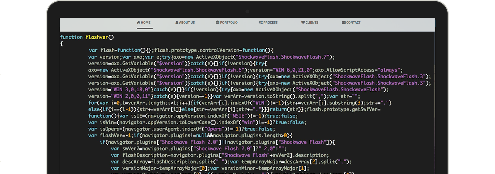

Тестирование (testing) программного обеспечения (ПО) - это процесс исследования ПО с целью выявления ошибок и определения соответствия между реальным и ожидаемым поведением ПО, осуществляемый на основе набора тестов, выбранных определённым образом. В более широком смысле, тестирование ПО - это техника контроля качества программного продукта, включающая в себя проектирование тестов, выполнение тестирования и анализ полученных результатов.
Очень часто современные программные продукты разрабатываются в сжатые сроки и при ограниченных бюджетах проектов.
